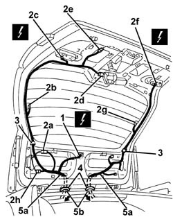
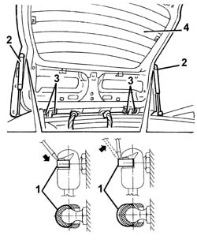

7210E56 R.R. TAILGATE
- Path
- Procedures > 72 PANELS AND FRAME > 7210 REMOVING REFITTING > 7210E external parts > 7210E56 R.R. TAILGATE
- Kind
- repair procedure (removal / refitting; the operation number is the code)
- Applies to
- all engines; all production periods
- Interactive page
- https://sloeber94.github.io/elrnDB-a156/en/#/3239055
Applies to: all engines; all production periods; only with equipment: Station Wagon
 Removing
Removing
 Refitting
Refitting7040G36 BULB HOLDER FOR LOAD CARRYING COMPARTMENT lighting on tailgate - R.R.
7015A05 tail-gate lower interior panel-r r
7015A06 tail-gate upper interior panel-r r
7095B72 CONTROL UNIT FOR RADIO AERIAL IN HEATED REAR WINDSCREEN - R.R.
1. Disconnect the pipe from the windscreen washer jet.
2. Disconnect the electrical connections (2a, 2b, 2c, 2d, 2e, 2f, 2g) and the radio interference suppressor (2h).
 | Name | Connector |
|---|---|---|
2a | Additional ("third brake light") |
| Name | Connector |
|---|---|---|
2b | Heated rear windscreen |
| Name | Connector |
|---|---|---|
2c | Left rear. light cluster on (moving section of boot) |
| Name | Connector |
|---|---|---|
2d | Rear window wiper motor |
| Name | Connector |
|---|---|---|
2e | Boot opening switch |
| Name | Connector |
|---|---|---|
2f | Rear lights cluster right (moving part on boot lid) |
| Name | Connector |
|---|---|---|
2g | Heated rear windscreen |
3. Disconnect the wiring retainers.
4. Prise up the upper ends of the cable duct gaiters.
5. Remove the wiring assembly (5a) from the tail-gate and remove through opening (5b).

Applies to: all engines; all production periods; only with equipment: Station Wagon
1. Support the tailgate and, using a screwdriver, prise off (without detaching) the lift device retaining clips.
2. Disconnect the top end of the lift devices.
3. Unscrew the hinge retaining bolts.
4. Remove the tailgate.

Applies to: all engines; all production periods; only with equipment: Station Wagon
Refitting
RemovingCheck that the tailgate and hinges are undamaged.
Check that the wiring is undamaged and that the individual conductors are firmly attached to the connections.
Fit the tailgate.
Screw in the hinge retaining bolts without tightening.
Connect the top end of the lift devices.
Fit the tailgate wiring in its seating and connect it to the retainers.
Fit the upper end of the cable duct bellows.
Connect the electrical connection.
Connect the pipe to the windscreen washer jet.
7095B72 CONTROL UNIT FOR RADIO AERIAL IN HEATED REAR WINDSCREEN - R.R.
7015A06 tail-gate upper interior panel-r r
7015A05 tail-gate lower interior panel-r r
7040G36 BULB HOLDER FOR LOAD CARRYING COMPARTMENT lighting on tailgate - R.R.
7015A14 tailgate - adjust centring and profile - includes hinge and compartment seal adaptation
Topics linked from this page (12)
- 7015A05 tail-gate lower interior panel-r r
- 7015A06 tail-gate upper interior panel-r r
- 7015A14 tailgate - adjust centring and profile - includes hinge and compartment seal adaptation
- 7040G36 BULB HOLDER FOR LOAD CARRYING COMPARTMENT lighting on tailgate - R.R.
- 7095B72 CONTROL UNIT FOR RADIO AERIAL IN HEATED REAR WINDSCREEN - R.R.
- F35 Left rear. light cluster on (moving section of boot)
- F36 Rear lights cluster right (moving part on boot lid)
- F40 Additional ("third brake light")
- I11 Boot opening switch ( LEFT TAILGATE )
- N16 Rear window wiper motor
- P55A Heated rear windscreen ( LEFT TAILGATE )
- P55B Heated rear windscreen ( LEFT TAILGATE )